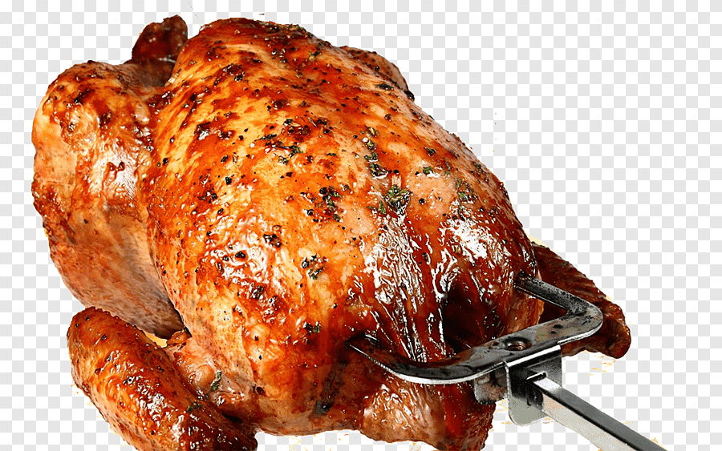

SAJJI:
-
Balochistan is the province of Pakistan and famous for simplicity, charm and honesty of its people and their
living style. Sajji with rice is one of the tradional food of Baluchistan. Traditionally it is made with lamb or
mutton but here we give it a twist and created this recipe with chicken We have also made sajji masala for this
recipe along with sajji rice. Sajji is a slow roasted meat recipe, a whole lamb stuffed with rice. In
Balochistan sajji is served with traditional bread called "kaaK" cooked on hard stone. I will surely share the
recipe of kaak as well but today I am sharing this recreated recipe of chicken sajji with you. Hope you will
enjoy it in this winter season for your BBQ parties or any special event.
Ingredients
____________________For Chicken Marination__________________
Whole chicken (sabut murghi) 1.25 kg
Vinegar (Sirka) 1/4 cup
Ginger garlic paste (adrak lahsan paste) 2 tablespoon full
Salt (namak) 1 tablespoon
_________________For Sajji Masala________________
Black pepper corns (Sabut kali mirch) 1 teaspoon
Coriander seeds (Sabut dhanya) 1 tablespoon
Cumin seeds (Sabut zeera) 1 teaspoon
Black salt (kala namak) 1 teaspoon
Mango powder (amchor powder) 1 teaspoon
_________________For Sajji Rice___________________
Boiled Rice (ublay Chawal) 500 grams or 1/2 kg
Onion (piyaz) 1 medium sliced
Raisins (kishmish) 2 tablespoon
Peeled and sliced almonds (Chilay hoye aur katay hoye badam) 2 tablespoon
Green cardamom (hari ilaich) 4
Star anise (badyan phool) 1
Cloves (laung) 4
Black cardamom (bari ilaichi) 1
Cinnamon (dar chini) 1
Salt (namak) 1 teaspoon
Cooking oil 4 tablespoon
Directions
Take the chicken and put deep cuts on it. You can use chicken with or without skin as the skin on chicken makes
it juicy during cooking.
Add ginger garlic paste and salt in vinegar, mix well and pour this mixture on the chicken. Rub the mixture well
on the chicken so it could even reach deep in the cuts as well.
Cover the bowl, keep it in fridge and let the chicken marinate over night.
After the marination time take the chicken out on a strainer so that the coated mixture could be strained well.
Take a big pan (pateela) and layer salt in the bottom, put a wire stand or any steel vessel in the middle of
pateela. Cover the pateela and let it pre heat for 10 minutes on medium flame.
Grease a baking tray and place the chicken over it, rub some oil over the chicken as well. Put the baking pan of
chicken in pre heated pateela.
Cover pateela and bake for 60 minutes on medium to low flame.
Back to Home Page